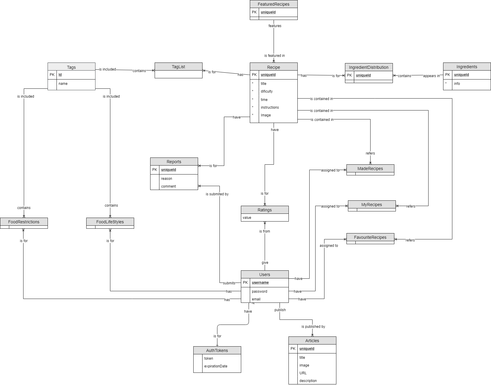

Cuisine Web Helper - Project Description
1. Abstract
We are a team of students from "Faculty of Computer Science" Iași, IInd year, B1 group, and this is our Web Technologies
project - Cuisine Web Helper. This article provides information on how this project has been developed,
describing the processes of project prototyping, architecture design and solution development.
2. Introduction
Cuisine Web Helper is a Web application that allows people to quickly find cooking recipes
for their next delicious meal. Each recipe has multiple tags associated with it in regard to
the ingredients used, cooking methods and tools, food restrictions, life style etc. The search
engine is based on providing recipes that satisfies a list of tags provided by the user. In addition
to this, the users have access to a series of articles that they can read in order to hone their cooking
skills or learn something new.
3. Github Repository
From the beginning of the project development, Github versioning system has been used. Our
application is hosted on a public repository available here.
We initially had 3 branches, one for each team member, but in the solution step we decided to
stick to a single branch: master.
4. Prototype
For the prototype step, we tried to cover a large set of extra functionalities, such as user generated content,
admin content and user management, recipe rating and reports, all of these encapsulated in a
simple and elegant design. There are two important pages on the site: all recipe view and all article view.
Both of them depicts gallery items with large and sugestive images, titles and descriptions that redirects
to their's respective own page when clicked. Each recipe has it's own page, presenting concise information
such as tags, rating, difficulty, time to make in minutes, ingredients and how to make steps. In addition,
the menu bar is visible on every page on the upper right side. On the all recipe and all articles pages, you
have access to the search sidebar by clicking on the "Search" button located in the upper left corner. This
sidebar allows users to easily search and filter recipes, either by searching recipe names or by their
associated tags. We also focused on delivering a responsive prototype, tested on several smartphone and tablet models.
Project prototype is public and can be accessed here.
5. Architecture
Cuisine Web Helper is a classic client-server application, where lots of processing is done on server side,
while the client only interacts with views generated by the server. A MySQL database is used to store data
about users, recipes, articles, tags, ingredients and interactions between them. The application also offers
articles and other resources for the user to read in the form of links to articles from external sources such
as Facebook, BBC or specialized nutrition and gastronomy websites. Model-View-Controller pattern has been
used in order to organise and develop the website properly. Keep in mind that the following diagrams depicts
the application with the prototype in mind and not the final form of the application. This means that some
of the details presented below may or may not be present in the final solution.
5.1. Master Diagram

The above diagram depicts the architecture description presented in the last diagram. Dektop or mobile clients
make requests to the Cuisine Web Helper application's server. The server controllers interact with the models
that extract data from a MySQL database, then create a specific view which is returned as a response to the user.
Additionally, links to external articles are stored into the database and retrieved as necessary.
5.2. Use case diagram

This diagram presents all actions both types of users can do. The current solution only allows the admin user
to manage content (recipes and articles), while the normal user can only view and search it.
5.3. Model Diagram

Model Diagram presents an abstract Model (offered by an ORM) from which all other models are derived. The
main models are User and Recipe, both having rich interactions with other models such as Tag, Article or Ingredient.
5.4. Database Diagram

The Database Diagram contains 16 tables that depicts the rich interaction between Recipes, Users and Tags.
6. Solution
In comparison with the prototype and architecture plans, our solution has been reduced to match initial criterias.
There are several admin users that can login to application and manage the content of the site. They can create,
update, view, search or delete articles and recipes. In addition, there are options to export recipes in several
formats such as CSV, JSON and RSS. A non-admin user is able to view recipes and articles and also search recipes
matching a wide range of criterias such as recipe names, containing or not certain tags, having a certain difficulty
or necessary cooking duration.
6.1. Technologies
- Database: MySQL, hosted on a VPS
- Front-end: html, css, javascript, jQuery
- Back-end: PHP, Paris ORM, Blade Template Engine
7. Conclusion
Maecenas in sollicitudin sem, quis mollis orci. Duis maximus convallis arcu non placerat. Proin maximus tempor orci. Nulla vulputate, ligula nec porttitor pharetra, nulla sapien feugiat purus, ut varius risus nibh quis nunc. Phasellus eget nulla rutrum, ultricies enim vel, facilisis nisl. Sed rutrum nulla vitae varius venenatis. Sed fermentum libero vel pellentesque iaculis. Sed eget tincidunt nisi.